Советую вариант 3: машина у фасада Evolution днём
Послушать итог голосом
Это настоящее здание на Машерова, 15/4, с вывеской «EVolution electric car». Машина передана точно, свет дневной и ровный. Фон один и тот же, поэтому его можно повторять на всех карточках, и каталог будет выглядеть одной серией. Зал (вариант 1) хорош как запасной, если нужен кадр внутри салона.
Как делали
- Фон – реальные фото салона: 28 снимков из зала, 11 фото с Яндекс Карт (фасад, ресепшн, стена с воротами), фото выдачи с сайта.
- Машина – официальные рендеры Zeekr 8X: ¾ спереди, сбоку, сзади, крупно решётка.
- Генерация – Codex imagegen. Каждый кадр проверен глазами целиком: решётка из вертикальных хромированных планок, световая полоса, 4 колеса, пропорции.
- Номера пустые белые, без знаков. Иероглифов и зеркального текста нет. Логотип – только настоящая вывеска на фасаде.
- Цвет везде один, белый перламутр. Так проще сравнивать подходы.
- Все кадры – WebP 1600x900, 108–353 КБ.
10 вариантов
1. В зале, ¾ спереди
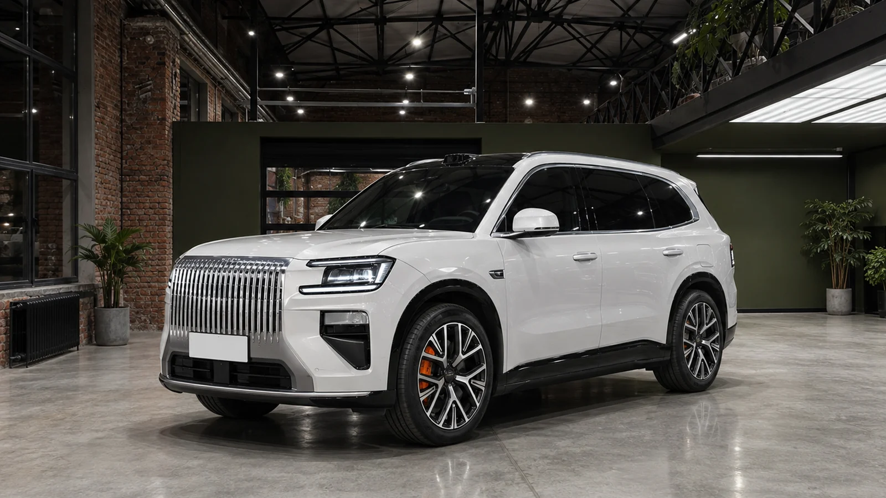
- Подход: машина одна посреди зала: кирпич, фермы, круглые акустические диски, оливковая стена со стеклянными воротами.
- Где уместен: первый экран карточки, каталог.
- Получилось: машина точная, зал узнаётся, свет как на настоящих фото.
- Не получилось: дисков на потолке меньше, чем в жизни.
2. В профиль на фоне ресепшна
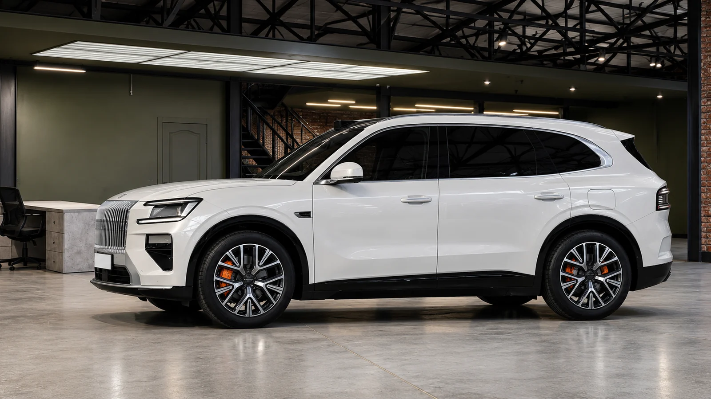
- Подход: чистый вид сбоку, сзади настоящий ресепшн: серый стол, оливковая стена, лестница, кирпичная колонна.
- Где уместен: галерея карточки (размер и силуэт), блок характеристик.
- Получилось: пропорции и колёса точные, ресепшн как на фото с Яндекс Карт.
- Не получилось: логотипа на стене нет. Его там нет и в жизни, поэтому не выдумывали.
3. У фасада днём, ¾ спереди
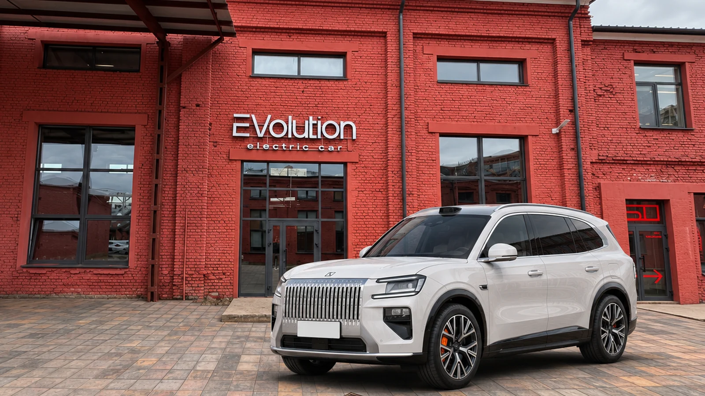
- Подход: правка настоящего фото фасада, машина на брусчатке у входа.
- Где уместен: первый экран карточки, каталог, блок «Где посмотреть».
- Получилось: фасад, окна, вывеска и навес остались как в жизни, машина точная.
- Не получилось: чужой Mercedes с края пришлось обрезать. Справа видна соседская дверь с красной вывеской, она настоящая.
4. У фасада вечером
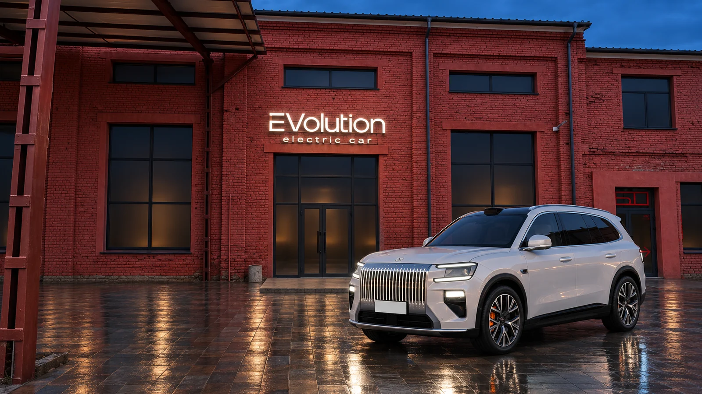
- Подход: тот же фасад в синий час: горит вывеска, мокрая брусчатка, у машины включены дневные огни.
- Где уместен: баннер главной, первый экран раздела, реклама.
- Получилось: эффектно, вывеска цела. Окна тёмные, без выдуманной мебели.
- Не получилось: первая попытка нарисовала в окнах чужой интерьер, переделали. На капоте отражалась вывеска зеркально, это отретушировано. Свет в окнах условный.
5. Зима у салона
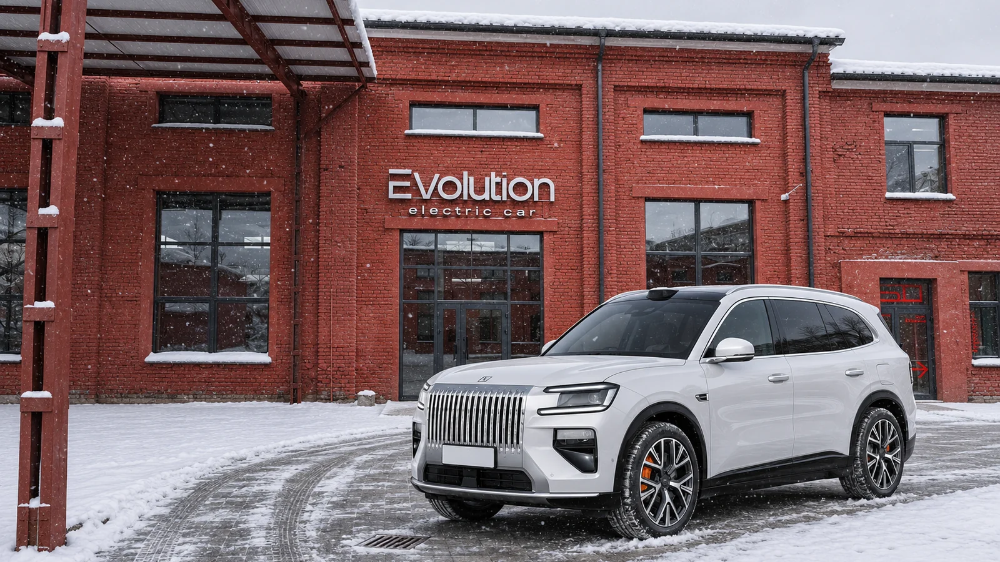
- Подход: фасад зимой: свежий снег, колея, снегопад, машина чистая.
- Где уместен: сезонный баннер с декабря по февраль, блок «Приезжайте смотреть».
- Получилось: выглядит как минская зима, вывеска и здание целы.
- Не получилось: только на зиму. Летом такая картинка будет выглядеть старой.
6. В зале среди других машин
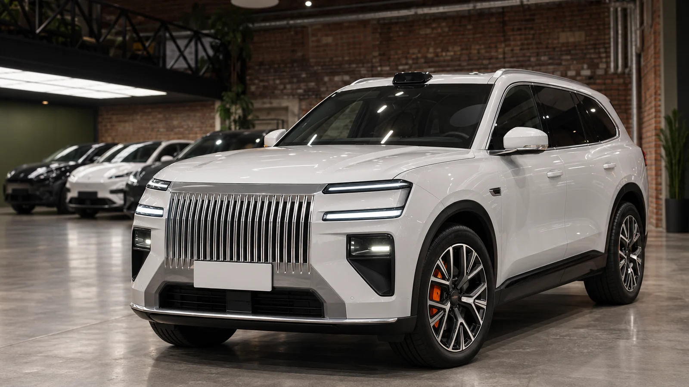
- Подход: наша машина резкая на первом плане, сзади размытый ряд других машин без значков.
- Где уместен: каталог «В наличии», блок «Машины в салоне».
- Получилось: понятно, что это салон с наличием. Решётка чистая.
- Не получилось: первая попытка дала «закорючки» на верхней кромке решётки, переделали. Стена в глубине больше кирпичная, чем в жизни.
7. Выдача клиенту
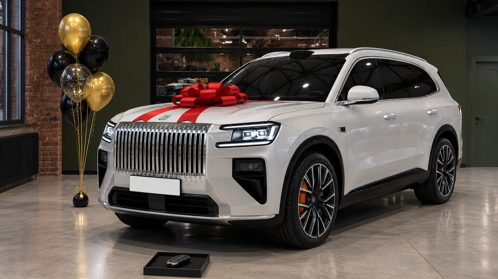
- Подход: у стеклянных ворот зала: красный бант на капоте, чёрно-золотые шары, как на настоящей выдаче, ключ на подносе. Людей нет.
- Где уместен: блок «Как проходит выдача», отзывы, соцсети.
- Получилось: с третьей попытки. Кадр горизонтальный, лента банта на капоте, решётку не задевает.
- Не получилось: низ решётки чуть «тянется». Первые две попытки были хуже: вертикальный кадр, лента на решётке.
8. Крупно перед машиной
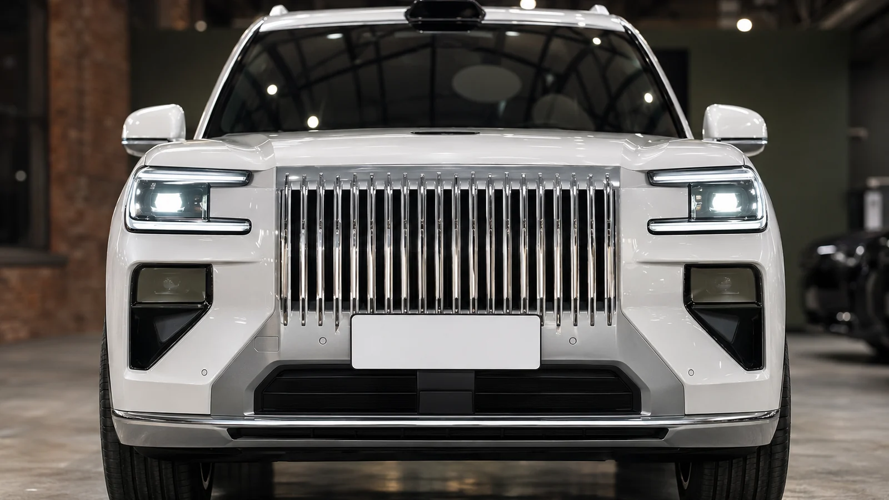
- Подход: низкая точка, решётка и световая полоса на весь кадр, сзади размытый зал.
- Где уместен: галерея карточки, блок «Дизайн», обложка статьи.
- Получилось: самая точная решётка из всех, салон узнаётся по кирпичу и дискам.
- Не получилось: сам салон почти не виден. Для «машина в нашем салоне» кадр слабее.
9. Сзади ¾ у входа
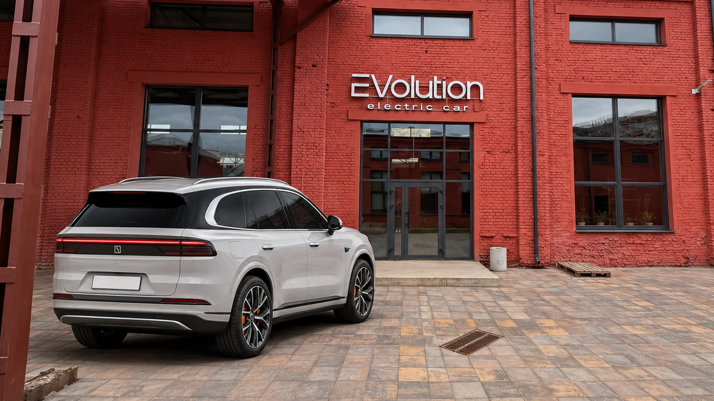
- Подход: фасад днём, машина задом к камере: сквозная полоса фонарей, чёрная крыша.
- Где уместен: галерея карточки, второй кадр после варианта 3.
- Получилось: корма узнаётся, вывеска цела.
- Не получилось: машина в кадре мельче, чем в варианте 3. Кадр пришлось доставать вручную, потому что генератор сначала подложил чужую картинку.
10. Студия внутри салона: подиум и свет
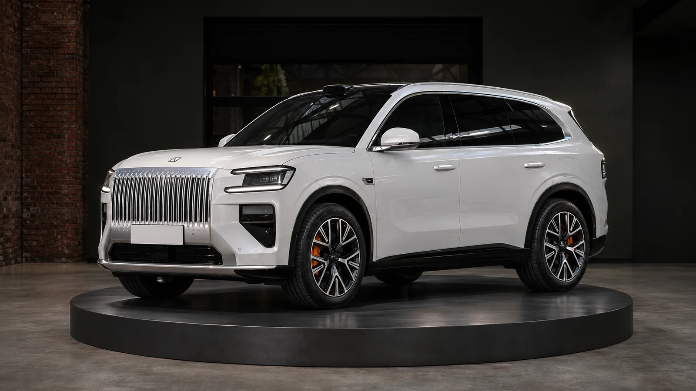
- Подход: зал затемнён, машина на круглом подиуме, мягкий верхний свет. Сзади видны кирпич и ворота.
- Где уместен: первый экран премиальной карточки, презентация модели.
- Получилось: дорогой вид, машина точная.
- Не получилось: подиума в салоне нет, это постановка. Салон узнаётся слабо.
Исходные фото салона, от которых строили
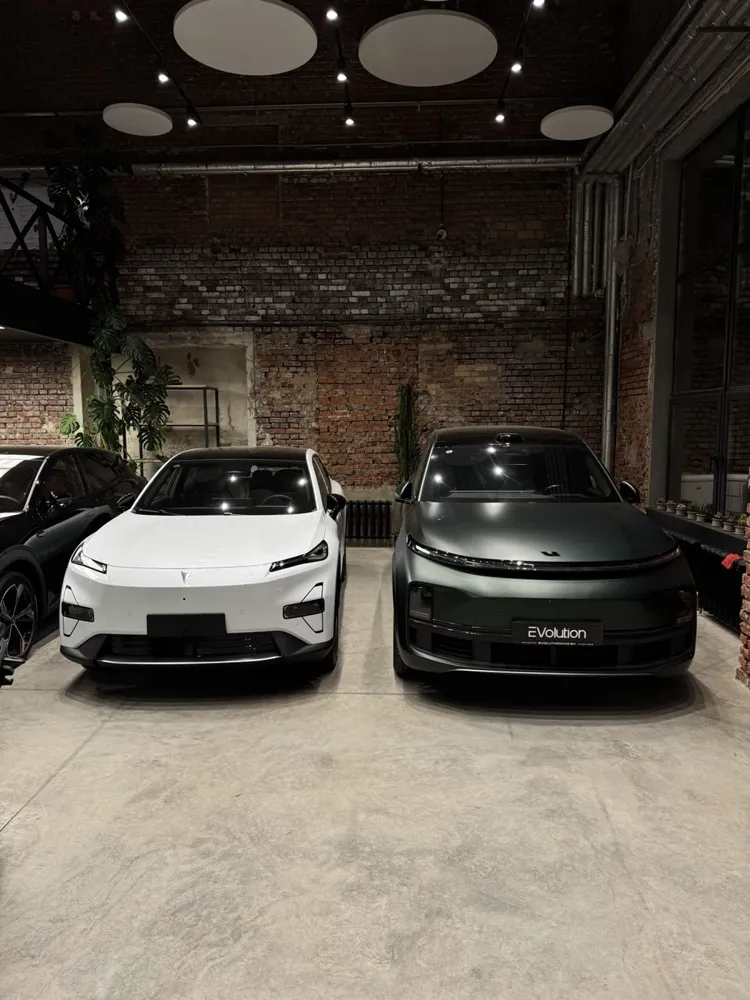
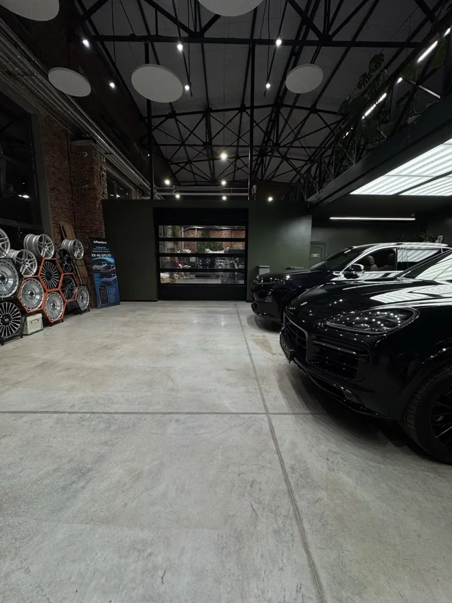
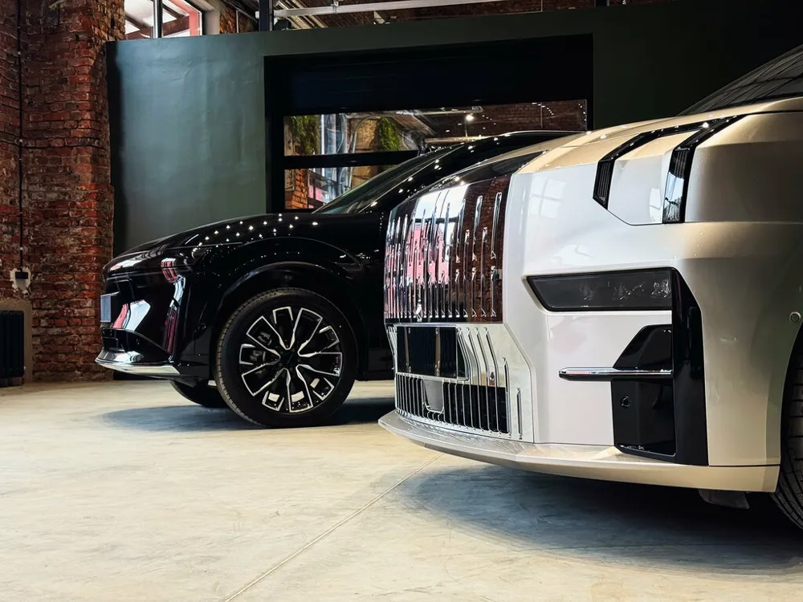
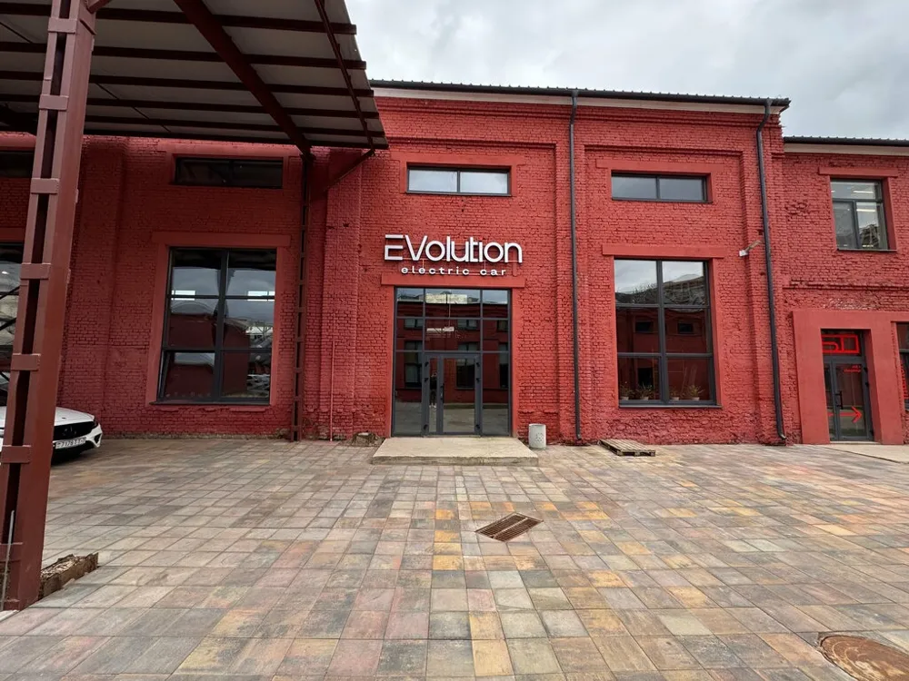
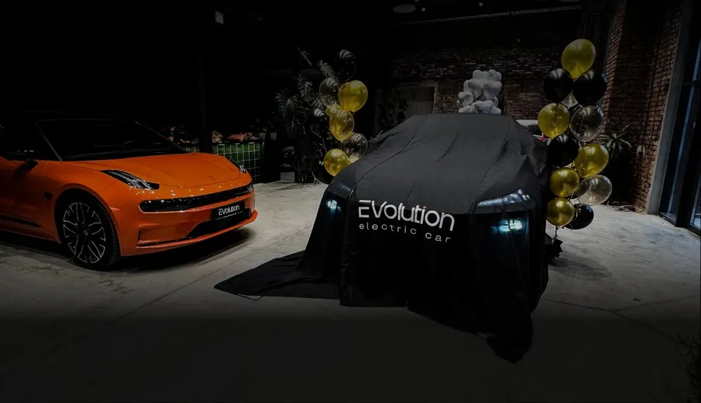
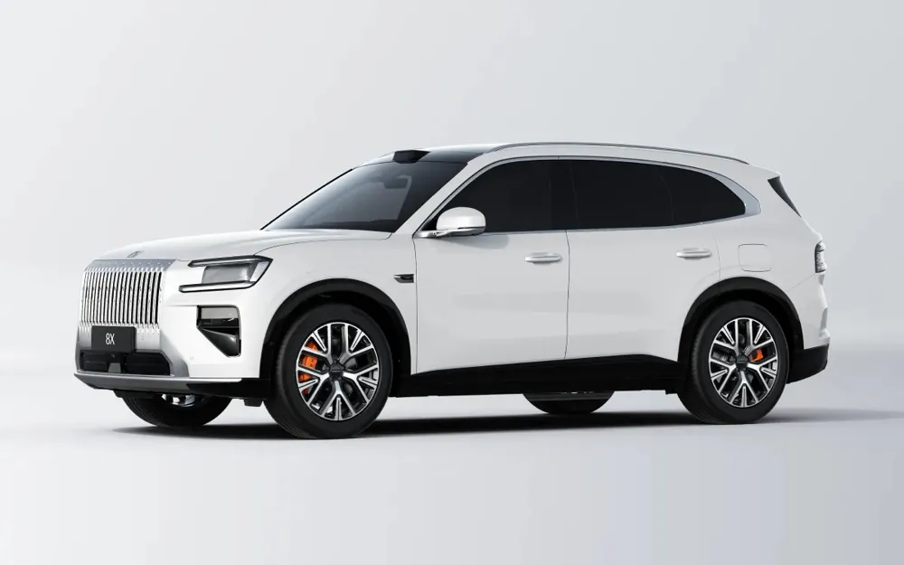
Что важно для серии на все карточки
- Подход 3 повторяется проще всего: один кадр фасада, меняется только машина. На каждую модель – 1–3 попытки.
- Каждый кадр надо смотреть глазами: решётку, колёса, текст на вывеске, номер.
- Генерации запускать по одной или сверять результаты по md5. При параллельном запуске генератор однажды подложил чужую картинку.
Нужно от Артёма
Какой номер берём (1–10) для всех карточек авто.
Что раскрыть
- Как делать серию на весь каталог: сроки и проверки.
- Вариант 3 в другом цвете машины, чтобы проверить на чёрной.